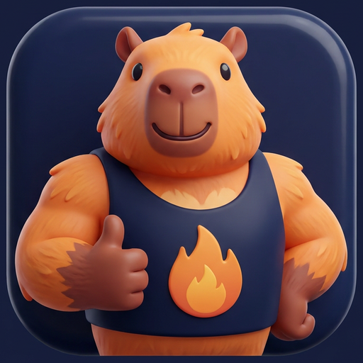

Поставь PushUp на телефон
Занимает 10 секунд. Ни App Store, ни регистрации, ни аккаунтов — приложение появится иконкой на твоём экране.
Сначала открой в Safari
Ты открыл ссылку внутри мессенджера — отсюда установить нельзя. Это два тапа:
- 1Нажми ⋯ или значок Safari внизу экрана
- 2Выбери «Открыть в Safari» — вернёшься на эту же страницу
https://neuroba.github.io/pushup-tg/install.html
Три тапа — и готово
Кнопка «Поделиться» — квадрат со стрелкой вверх, внизу экрана Safari.
- 1Нажми Поделиться
- 2Пролистай вниз до «На экран “Домой”»
- 3Нажми «Добавить» справа вверху
Нет пункта «На экран “Домой”»? Значит страница открыта внутри мессенджера.
Нажми ⋯ внизу и выбери «Открыть в Safari».
Установка в один тап
Приложение встанет как обычное — иконкой в меню телефона.
- 1Меню браузера ⋮ справа вверху
- 2Пункт «Установить приложение»
Открой эту ссылку с телефона
PushUp считает повторы датчиком движения — нужен телефон в руке. С компьютера можно только посмотреть.
https://neuroba.github.io/pushup-tg/install.html
Уже установлено 🎉
Ты открыл PushUp с домашнего экрана. Дальше — только тренировка.
Открыть приложение